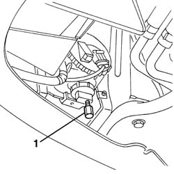

5540D38 fog lamp beam - adjust
- Path
- Procedures > 55 ELECTRICAL EQUIPMENT > 5540 EXTERIOR LIGHTING > 5540D fog lamps > 5540D38 fog lamp beam - adjust
- Kind
- repair procedure (removal / refitting; the operation number is the code)
- Applies to
- all engines; all production periods
- Interactive page
- https://sloeber94.github.io/elrnDB-a156/en/#/3238470
Applies to: all engines; all production periods
Prearrange the car complete of spare wheel, tools, supply liquids, stock fuel.
Check that the tire pressure is correct.
Set the switch of the command for the headlight position on "O".
Lay the car on a flat ground, oriented perpendicularly to a screen or opaque surface, at the distance of 10 metres, on which there is a line that corresponds to the height from the ground (A) of the centre of the fog lamps.
1. Switch on the fog lamps and operate on the adjustment screw so that the boundary line between the dark area and the area lighted by the beam is situated at the height B = (2/3 A-11) cm.
